Répertoire de données
Transformer la recherche silotée en un patrimoine de connaissances partagé, actionnable et pérenne.
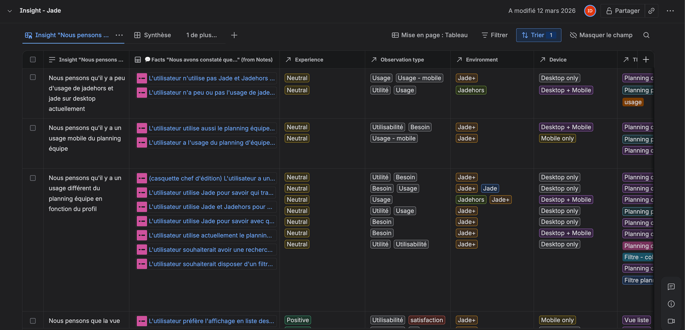
Un répertoire de données UX pour mutualiser la connaissance de recherche
Structurer la recherche utilisateur : centraliser les études, harmoniser la méthode (Atomic Research), faciliter le croisement des insights — avec les contraintes d'un outil interne (Confluence).
Lire l'étude de casContexte Business et produit
Au sein d'un Pôle UX & Change composé d'1 lead UX, 5 designers seniors, 2 designers juniors et 1 chargé(e) de conduite du changement, la forte croissance du nombre de projets a mis en lumière la nécessité de structurer et d'améliorer la méthodologie de recherche utilisateur.
Cadrage et définition du périmètre d'intervention
Points d'étapes fixés toutes les 2 semaines pour maintenir la dynamique.
Priorisation des besoins et problématiques
Les ateliers ont mis en exergue 4 points d'attention :
Contraintes et problématiques
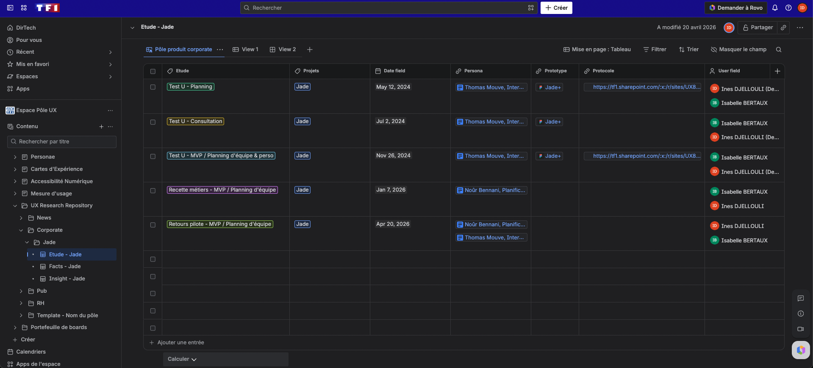
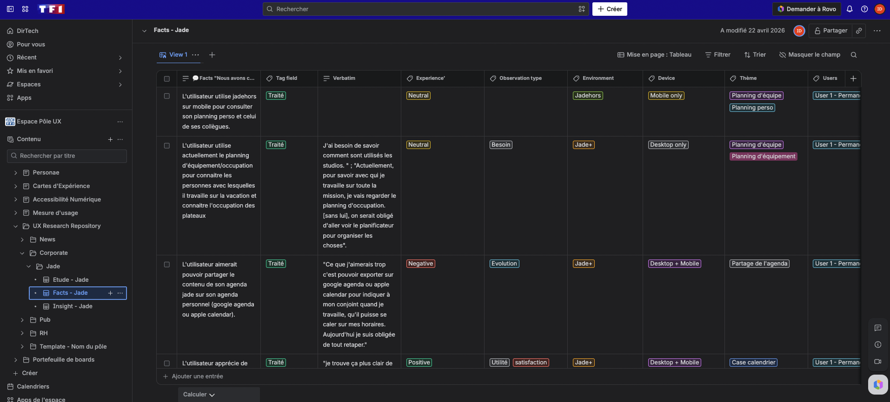
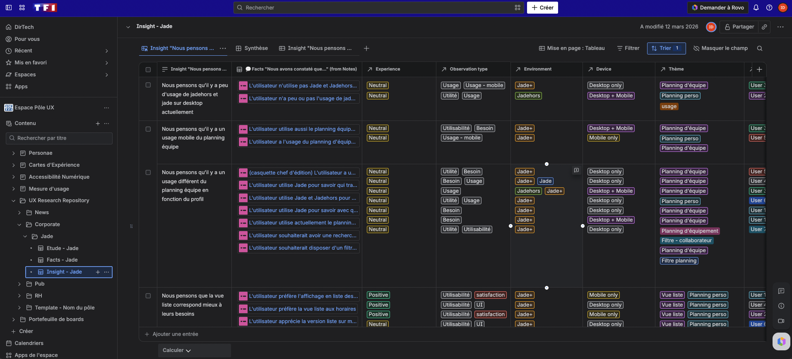
Base de données Confluence.
Stratégie de mise en place progressive
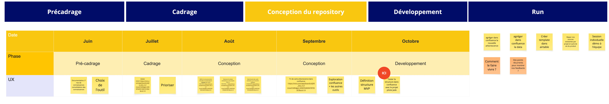
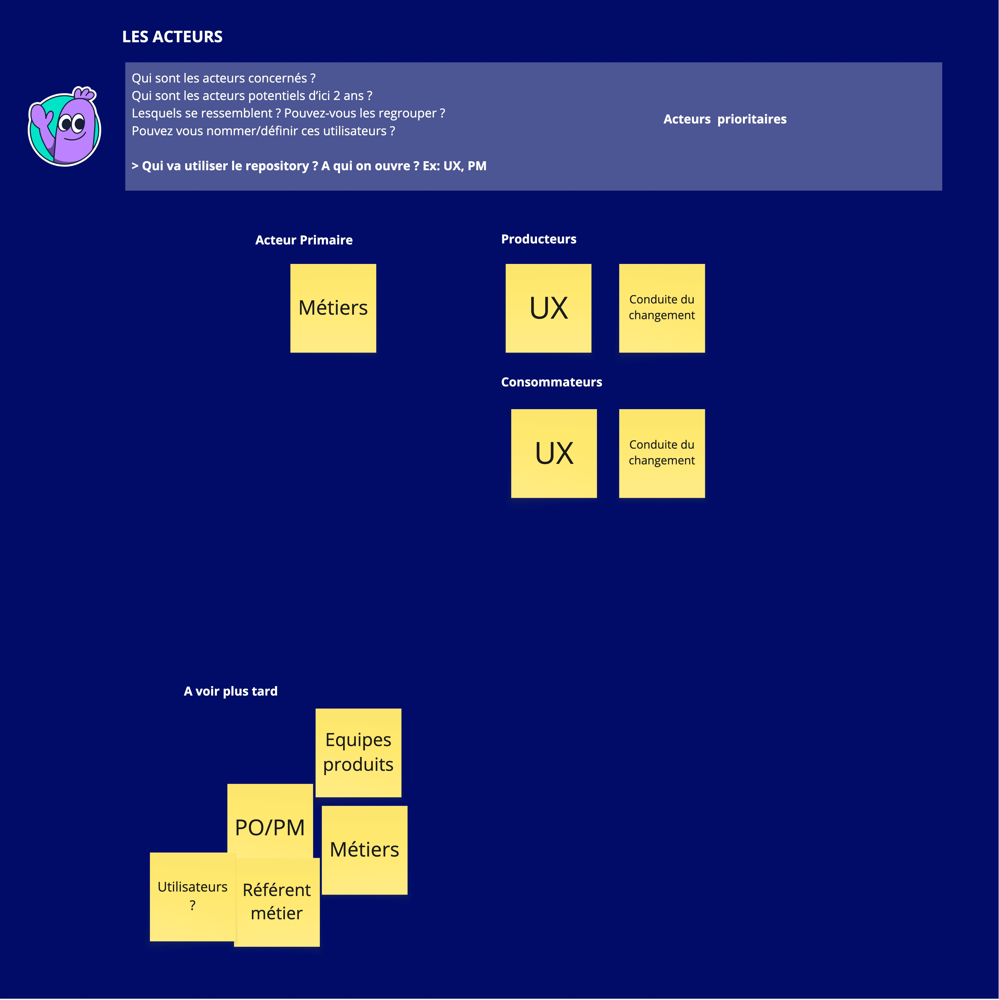
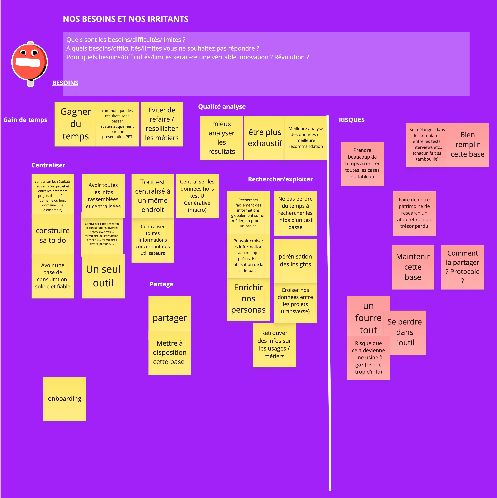
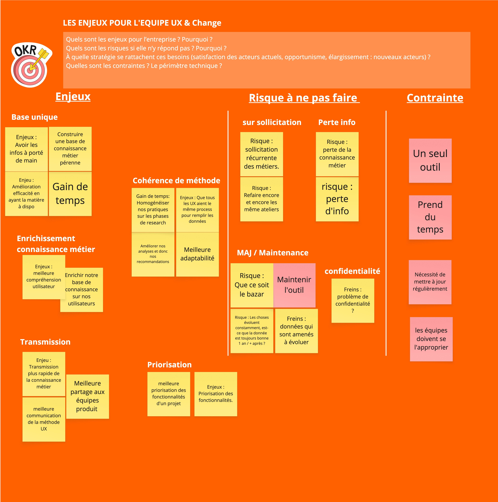
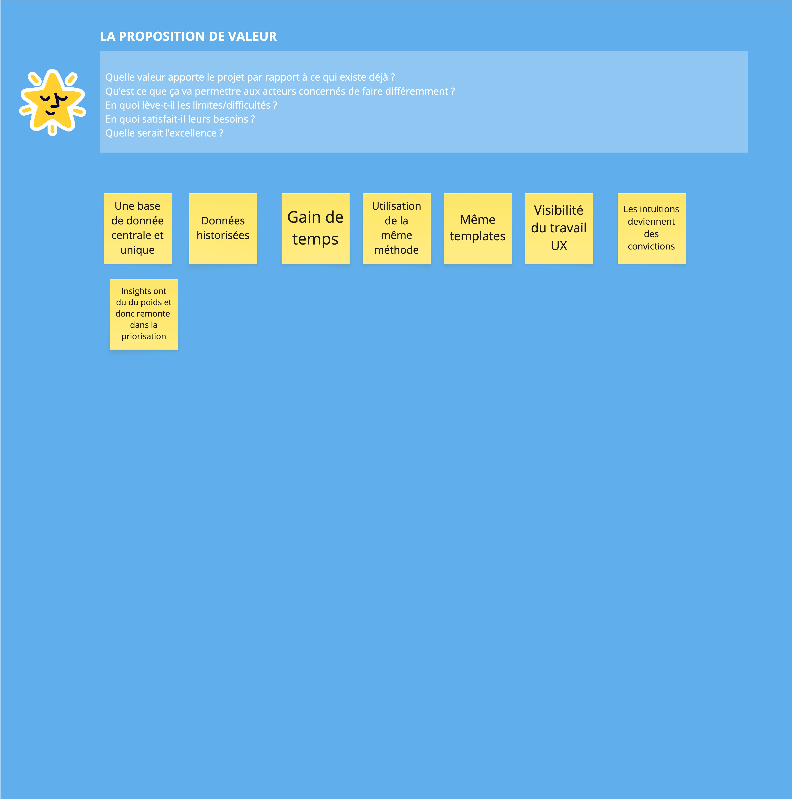
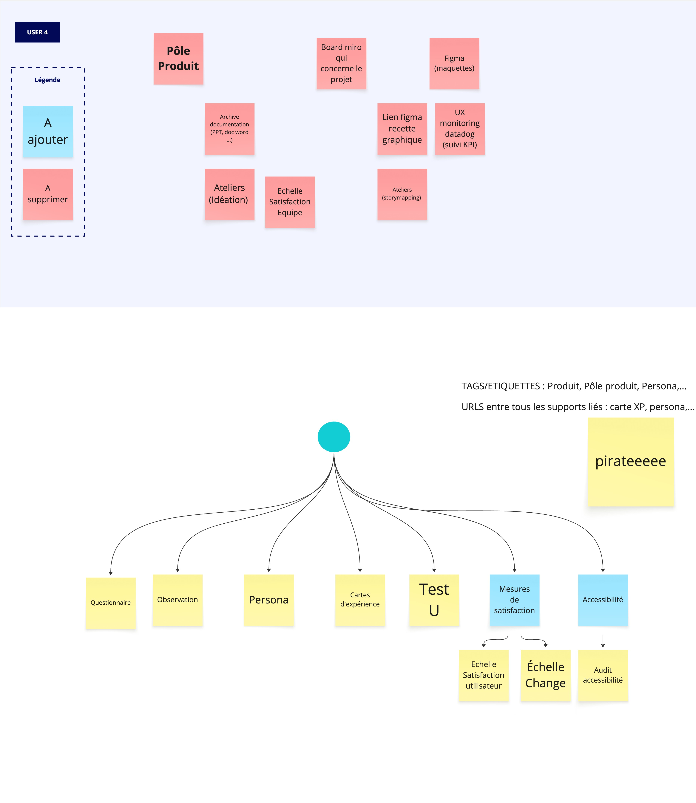
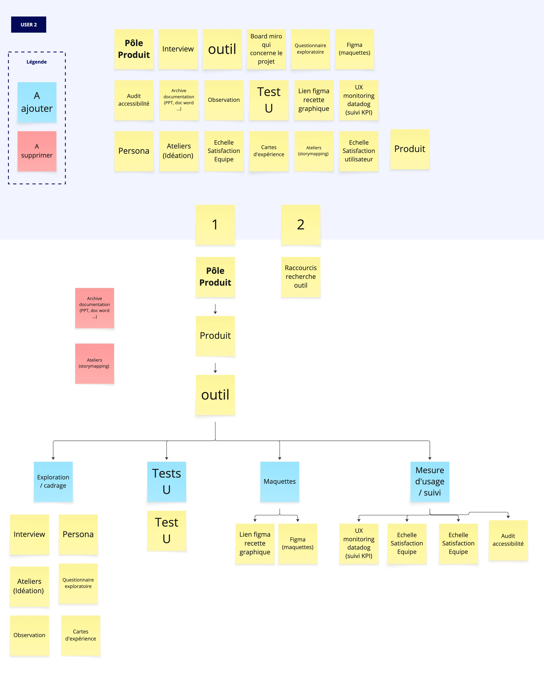
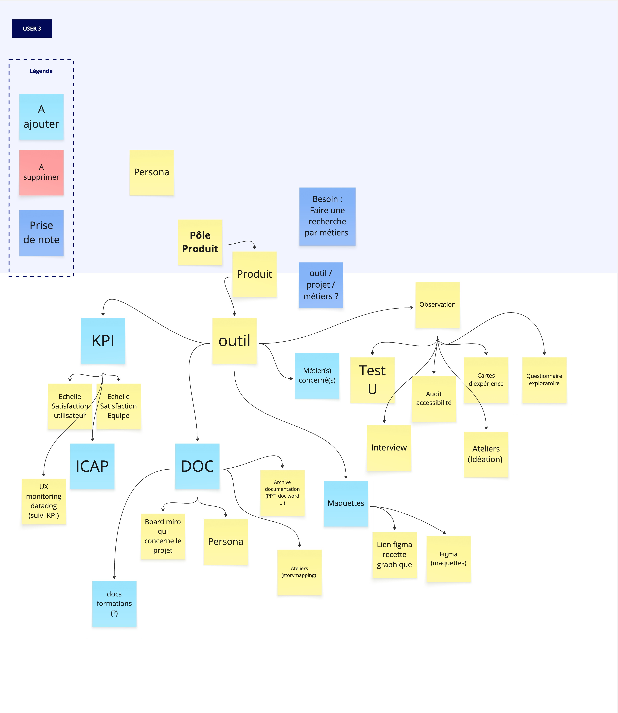
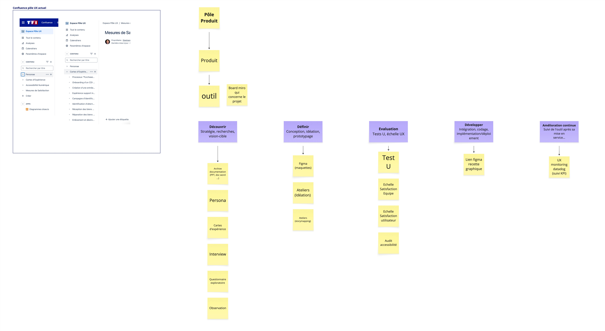
Résultats
Tous les membres de l'équipe UX formés et autonomes sur la méthode.